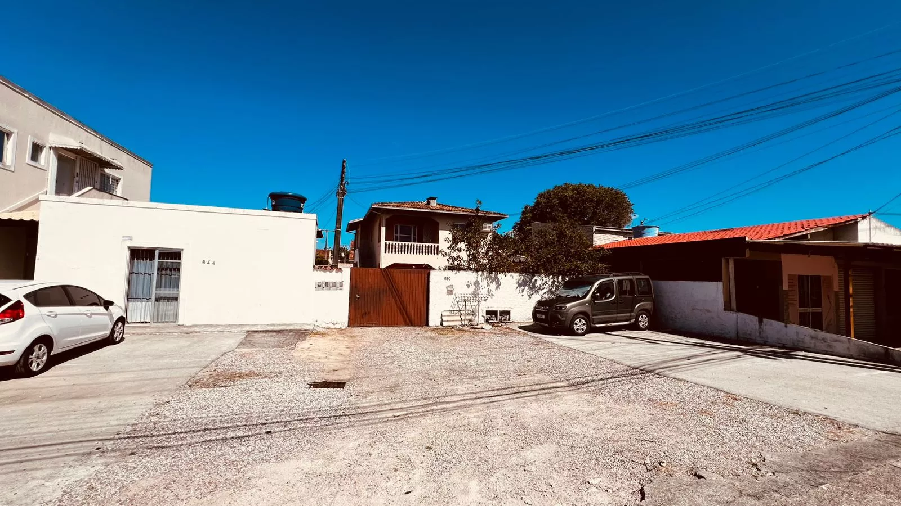

Nossa história
A empresa foi fundada em 2021 com o objetivo de oferecer atendimento técnico confiável em climatização para Florianópolis e região. Desde o início, o foco foi unir execução cuidadosa, orientação clara ao cliente e organização de agenda por bairro para reduzir tempo de resposta.
Ao longo dos anos, ampliamos a cobertura e estruturamos processos para manter padrão de qualidade em instalação, manutenção, limpeza, higienização, carga de gás e reinstalação, atendendo tanto residências quanto empresas.